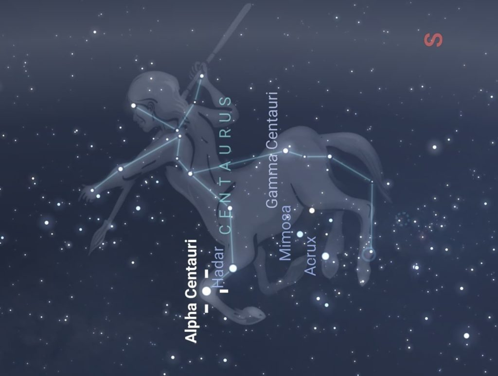

-
The Hunter Orion
The story of Orion and Artemis is a tale as old as time. It teaches us to not believe in the things hear from word of mouth, and the consequences of doing so.Orion was a fabulous hunter, it was said that once him and his two dogs, Canis Major and Canis Minor, started tracking a target, it was only a matter of time before they succeeded. It was this fact that most likely lead to Orion going to the forest where Artemis, the Goddess of Wild Animals and the Hunt, resided.
On his way there, he spotted what he thought was a flock of birds and quickly gave chase. It was not long however, before he quickly realized that these weren’t birds, but seven Nymphs dressed in white tunics. Now, this normally would not be a cause for concern, but these nymphs were the seven daughters of the Titan Atlas and the Oceanid Pleione; the later of which Orion had been tracking for quite some time. Among these seven was the nymph Merope, who Orion at the time was passionately in love with. This caused him to reach out and grab her, but just as he could make contact the nyphms cried out to Zeus and in pity he transformed all of the nymphs into doves and placed them into the stars. While saddened by this outcome, it was quickly overshadowed by the Goddess Artemis approaching him and complimenting him on his hunting prowess and strength. Soon Orion and Artemis become trustworthy companions, often challenging each other to races and archery competitions; and as night fell, the two would exchange stories and laugh in front of a fire. They fell madly in love, accompanying each other everywhere and hunting the days away. This peace however, wouldn’t not last.
Unbeknownst to them, Artemis’s brother Apollo, the God of Prophecy and ironically Truth, became jealous of their relationship. And began to put plans in place to rid the earth of Orion.
Using his godly powers, he sent a massive scorpion to attack and kill Orion as he slept, but in an amazing stroke of luck, Orion dreamt of this very thing happening and quickly arose to battle the scorpion. They exchange furious blows, but as the battle waged and Orion’s strength waned, he found that he could not pierce the creatures hide and began searching for an escape. The scorpion lunged towards Orion once more and in a desperate attempt to live, he ran and dove into the nearby shore and began to swim furiously. Apollo watched as these events unfolded and quickly came up with a plan to finish the job.
He ran into the compound where his sister Artemis and her hunters slept, and told her that an evil man who attacked a forest priestess was swimming by sea to escape. Blinded by her rage Artemis grabbed her bow and let loose an arrow that struck true, right into the heart of Orion.
Noticing her mistake far too late, she quickly swam out to retrieve his body, hoping that her friend Crete, the goddess of medicine would bring him back to life. Zeus interfered with this request, stating that there was a line between mortals and gods, and bringing him back to would cross that line.
Sadden by the loss of the one man she loved, Artemis turned to the stars and used her own godly powers to place his soul in the stars, where he remains even to this day.
-
<<<<<<< Updated upstream
<<<<<<< Updated upstream

Chiron The Centaur
Chiron is known throughout Greek mythology for being a youth-raising scholar, and a mentor to some of the greatest heroes to walk the earth. And while this may sound lackluster compared to grand stories of Hercules and his labors, when you account for the fact that Chiron was a centaur, who were known for being wild, lustful, indulgent drinkers and barbaric when intoxicated things begin to make more sense.
Chiron came to be after the Titan Cronus, the father of the Gods of Olympus, took the form of a horse and impregnated a nymph named Philyra. Because of this Chiron born with the head of a human as well as the legs of a horse. Disgusted by this, Philyra abandoned Chiron and subsequently left him to die.
Thankfully, Chiron was found by the twin gods Artemis and Apollo, and this event led to the both of them nurturing and teaching Chiron countless arts. From musical instruments and archery, to even medicine and prophecy; Chiron’s gifted mind absorbed it all. Later, it would become apparent that Chiron’s peaceful and kind characteristics came from the very gods who adopted him in a sense.
Chiron, in his adulthood, would go on to teach many of the most famous hero’s, such as the invulnerable Achilles and Jason, the leader of the Argonauts. In fact, most great hero’s who went on epic journeys can trace what they’ve been taught to Chiron and his lessons.
But while the peace-loving centaur wanted nothing more than to spend the rest of his immortal days educating the young Greek minds that would stumble upon him, it was simply not meant to be.
Chiron’s death was the outcome of a multitude of circumstances, most of which were not in his control. The hero Hercules had been in a heated discussion with his father Zeus, in which they came to the conclusion that in exchange for the life of Prometheus, he would find a way to make Chiron revoke his immortality. This was not a deal made to harm Chiron, but rather it was made due to Prometheus stealing fire and giving it humankind, which angered the gods.
Hercules, with a heavy heart, dipped an arrow into a jar containing the blood of the mighty Hydra, that he previously had slain for one of his 12 labors, and used his bow to fire it at Chiron.
Chiron fell to his knees and looked in panic at the wound, before long he realized that even with his mastery of medicine that there was no way to heal from this without experiencing a lifetime of pain. Sighing, he looked towards the heavens and renounced his immortality before passing away.
Zeus, in a rare moment of empathy, decided to place Chiron in the stars as acknowledgement as for heroic teachings and scholarly mind, where he remains even to this day.
-

Right Aligned Caption
Here's our small slogan.
-
 =======
=======
 >>>>>>> Stashed changes
=======
>>>>>>> Stashed changes
>>>>>>> Stashed changes
=======
>>>>>>> Stashed changes
Chiron The Centaur
Chiron is known throughout Greek mythology for being a youth-raising scholar, and a mentor to some of the greatest heroes to walk the earth. And while this may sound lackluster compared to grand stories of Hercules and his labors, when you account for the fact that Chiron was a centaur, who were known for being wild, lustful, indulgent drinkers and barbaric when intoxicated things begin to make more sense.
Chiron came to be after the Titan Cronus, the father of the Gods of Olympus, took the form of a horse and impregnated a nymph named Philyra. Because of this Chiron born with the head of a human as well as the legs of a horse. Disgusted by this, Philyra abandoned Chiron and subsequently left him to die.
Thankfully, Chiron was found by the twin gods Artemis and Apollo, and this event led to the both of them nurturing and teaching Chiron countless arts. From musical instruments and archery, to even medicine and prophecy; Chiron’s gifted mind absorbed it all. Later, it would become apparent that Chiron’s peaceful and kind characteristics came from the very gods who adopted him in a sense.
Chiron, in his adulthood, would go on to teach many of the most famous hero’s, such as the invulnerable Achilles and Jason, the leader of the Argonauts. In fact, most great hero’s who went on epic journeys can trace what they’ve been taught to Chiron and his lessons.
But while the peace-loving centaur wanted nothing more than to spend the rest of his immortal days educating the young Greek minds that would stumble upon him, it was simply not meant to be.
Chiron’s death was the outcome of a multitude of circumstances, most of which were not in his control. The hero Hercules had been in a heated discussion with his father Zeus, in which they came to the conclusion that in exchange for the life of Prometheus, he would find a way to make Chiron revoke his immortality. This was not a deal made to harm Chiron, but rather it was made due to Prometheus stealing fire and giving it humankind, which angered the gods.
Hercules, with a heavy heart, dipped an arrow into a jar containing the blood of the mighty Hydra, that he previously had slain for one of his 12 labors, and used his bow to fire it at Chiron.
Chiron fell to his knees and looked in panic at the wound, before long he realized that even with his mastery of medicine that there was no way to heal from this without experiencing a lifetime of pain. Sighing, he looked towards the heavens and renounced his immortality before passing away.
Zeus, in a rare moment of empathy, decided to place Chiron in the stars as acknowledgement as for heroic teachings and scholarly mind, where he remains even to this day.
-

Capricorn
Capricorn, which is Latin for “horned goat” is one of the twelve zodiac signs that graces the stars above our heads, and holds importance across many pantheons as well as real life. The actual animal is a hybrid between a goat and a fish, with the former being the head and the later being the tail.
In the Greek pantheon, Capricorn is often used to talk about two different individuals, one being Amalthea, the goat that breastfeed the soon to be king of gods Zeus in place of his mother. Other times Capricorn is referring to Pan, the main god of nature and the wild. It was said that while trying to escape the disaster that was Typhoon, he gave himself a fishes tail and swam away, saving his life.
In ancient times, the Babylonian’s recored in it their star catalogs around 1000 BCE. Later it would become the symbol for their god of water and bounty Era. While Ea was only one god in a pantheon of many he was deem very important around spring, where having a good bounty and water was a necessity to continue living.
-

Scorpio
Scorpio is one of the 12 zodiac signs that rest above our head in the stars. Like all the other it has importance and meaning that span back to the Ancient Era and across a plethora of pantheons.
In Greek history, the constellation Scorpio represented the fierce battle between Orion and colossal scorpion that the God of Prophecy Apollo sent. Orion managed to escape, only to be shot down by his lover Artemis, the Goddess of the Hunt, who was deceived by her brother Apollo in a ploy to git rid of Orion.
After the battle’s conclusion, Zeus immortalized the conflict by placing both Orion and the scorpion in the stars. To this day, both constellations remind us to not trust others blindly, lest it lead to disastrous results.